GAME TIP 이래에서 두 번째 문장을 확인하면 “시작을 입력해 첫 번째 스테이지로 이동하라”는 문장을 확인할 수 있습니다.
1. 설명 페이지
GAME TIP 이래에서 두 번째 문장을 확인하면 “시작을 입력해 첫 번째 스테이지로 이동하라”는 문장을 확인할 수 있습니다.
말 그대로 “시작”이라는 단어를 영어로 번역해 start를 입력하면 Stage 1으로 이동할 수 있습니다.
=> 정답: start
2. Stage 1. Prologue
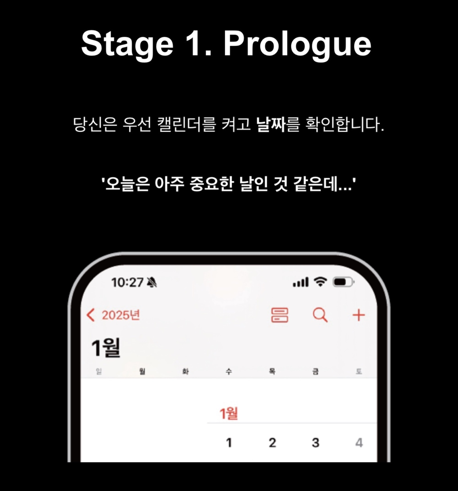
볼드체는 “아주 중요한 날”인 “오늘”의 “날짜”를 가리키고 있습니다.
또한, 일반적인 캘린더 어플에서는 오늘에 해당하는 날은 알아볼 수 있도록 표시가 되어있습니다. 하지만 사진에서는 표시를 확인할 수 없습니다. 따라서 사진에 나오지 않은 날들이 “오늘”에 해당한다는 것을 추측할 수 있습니다.
이를 통해 사진에 나오지 않은 날이자, 미궁의 주인공 상현님의 생일인 1월 18일이 “아주 중요한”, “오늘”이라는 것을 알 수 있습니다.
연도를 제외한 날짜인 0118을 작성하면 Stage 2로 이동할 수 있습니다.
=> 정답: 0118
3. Stage 2. 메신저
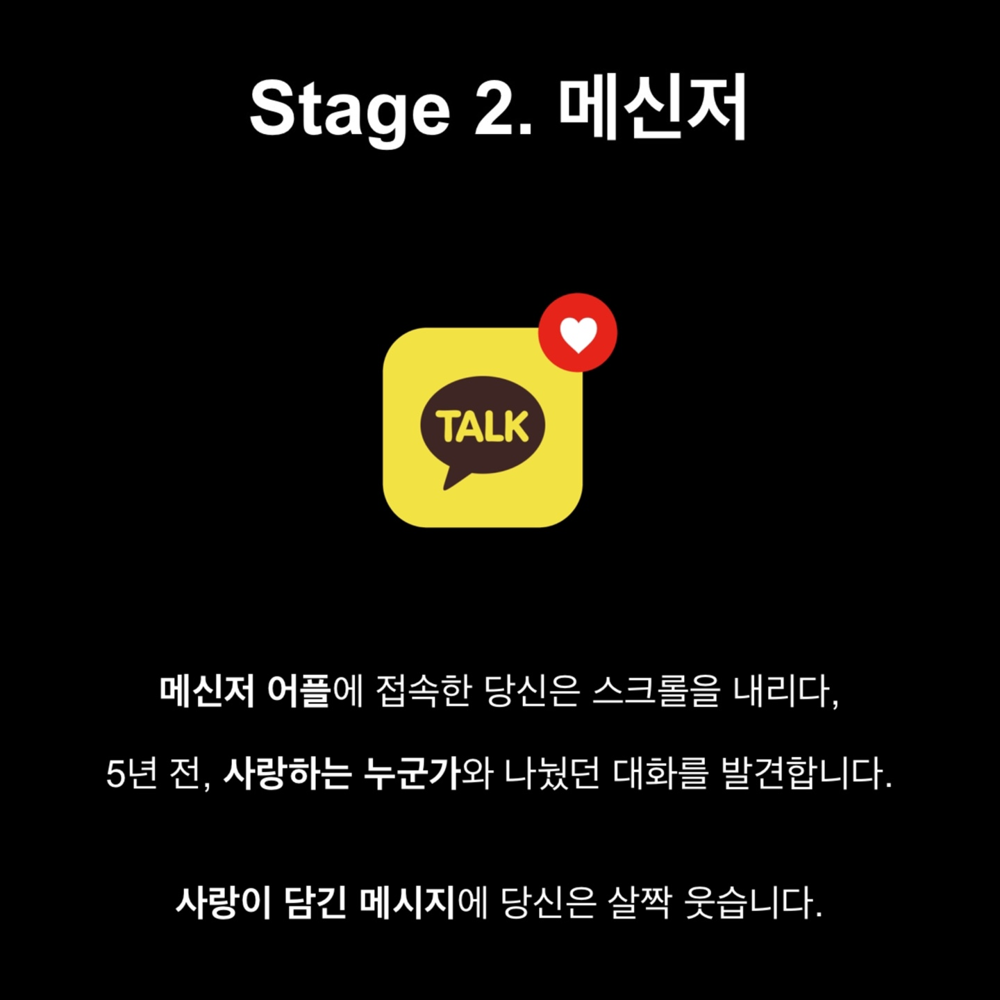
사진을 통해 볼드체가 가리키는 메신저 어플이 카카오톡이라는 사실을 확인할 수 있습니다. 이를 통해 관련 컨텐츠가 나상현씨밴드 유튜브 채널에 업로드 된 [단‘톡’인터뷰]라는 것을 추측할 수 있습니다.
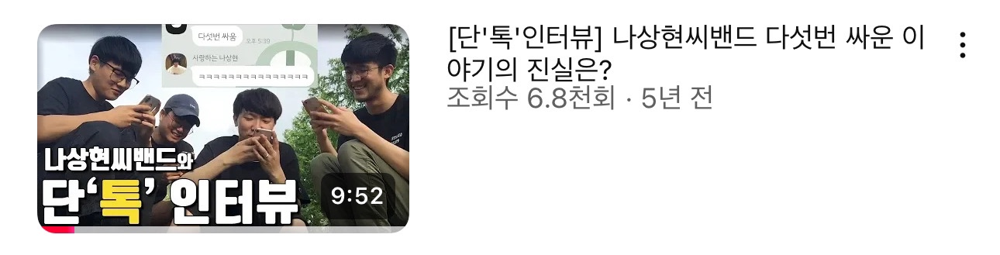
영상의 9분 30초 즈음으로 이동하면 <사랑해줘서사랑해!!> 채팅이 등장합니다.
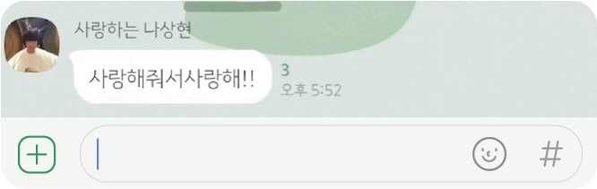
위 채팅이 전송된 시간이 오후 5시 52분인 것을 확인할 수 있습니다.
기호를 제외한 시간을 0을 포함하여 작성하면 Stage 3으로 이동할 수 있습니다.
=> 정답: 0552
4. Stage 3. 사진 속 추억
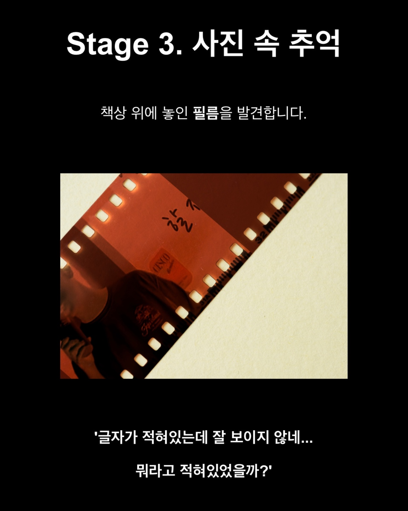
볼드체는 “Film”을 가리키고 있고, 사진은 필름(카메라필름/필름뮤직비디오) 속 장면 입니다.
이를 통해 확인해야 할 자료가 [나상현씨밴드 FILM MV]라는 사실을 추측할 수 있습니다.
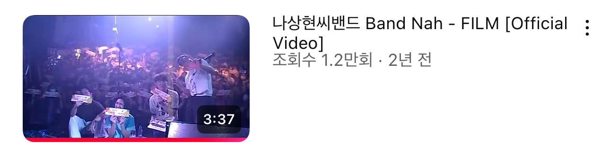
영상의 2분 즈음으로 이동하면 사진의 원본을 확인할 수 있습니다.
여기서 강조되어있는 글자인 “행복”을 영어로 번역해 입력하면 Stage 4로 이동할 수 있습니다.
=> 정답: happiness
5. Stage 4. 라디오
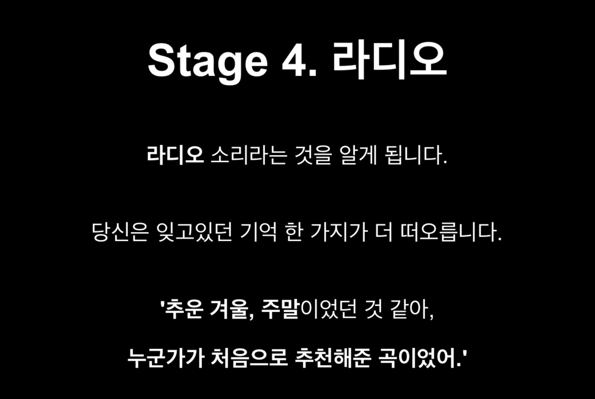
볼드체를 통해 확인해야 할 컨텐츠가 “라디오” 라는 것을 추측할 수 있으며, 그 중에서도 “추운 겨울”에 진행한, “주말”에 해당하는 어떤 요일이 제목에 들어가는 코너로 컨텐츠의 범위를 좁힐 수 있습니다.
상현님이 처음으로 라디오 고정게스트를 맡게 된 [데이식스의 키스 더 라디오 - 새러데이 뮤직 마켓]의 첫 방송인 12월 9일자 녹화분 중 33분 30초 즈음을 확인하면 추천곡이 <로우행잉프루츠 - Five Lines>라는 것을 확인할 수 있습니다.
곡 제목을 띄어쓰기 없이 소문자로 입력하면 Stage 5로 이동할 수 있습니다.
=> 정답: fivelines
6. Stage 5. 혼자 선 무대
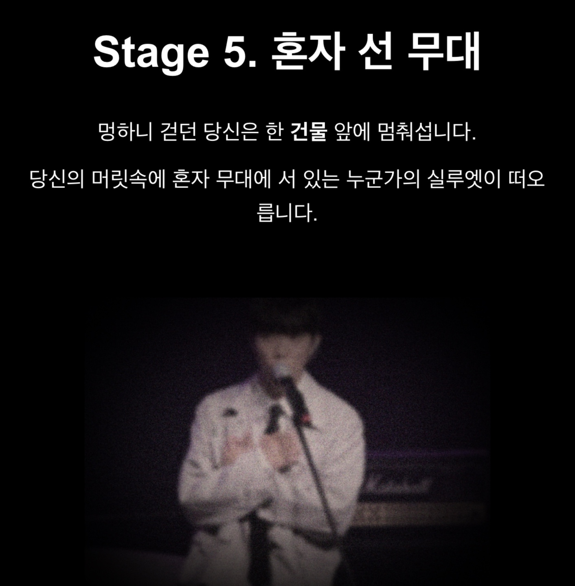
위 사진은 상현님의 솔로콘서트 Desk의 첫째날 사진이며, 원본은 2023년 9월 25일 업로드된 상현님의 인스타 게시물 이미지입니다.
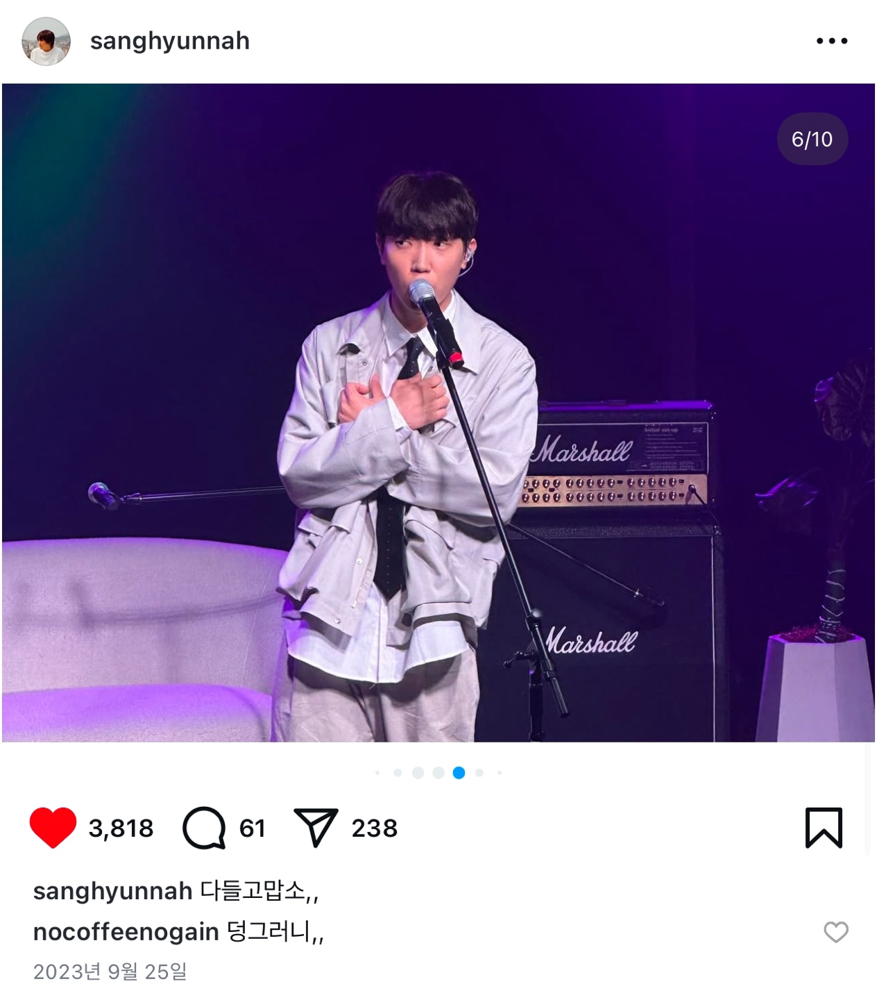
볼드체 “건물”을 통해 정답이 솔로콘서트가 열린 장소라는 것을 추측할 수 있습니다. Desk를 진행한 장소인
=> 정답: spacebrick
7. Stage 6. 카페
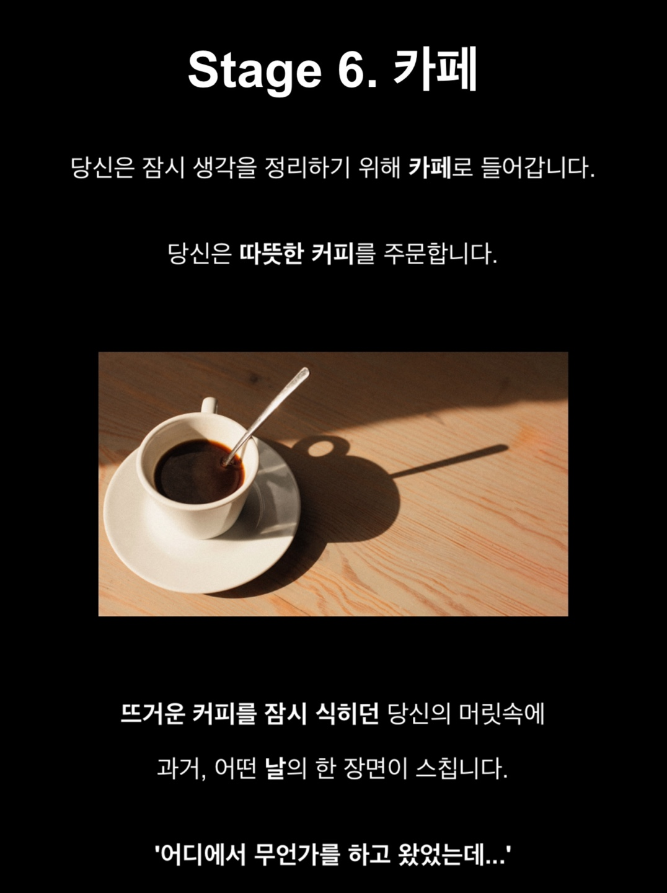
볼드체로 강조한 내용을 통해 “카페”에서 ”뜨거운 커피를 식히는“ 장면이 포함된 나상나상나상현 채널에 업로드된 동물의 숲 컨텐츠를 확인해야 한다는 것을 추측할 수 있습니다.
또한, 영상의 제목이 볼드체로 강조한 “어디에서 무언가를 하고 온 날”과 일치한다는 사실을 확인할 수 있습니다.
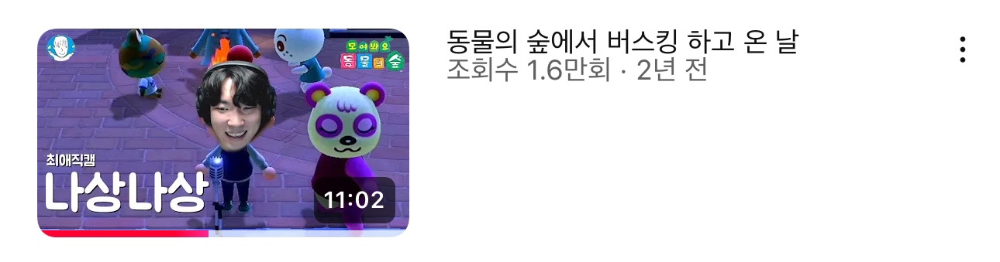
여기에서 “무언가”에 해당하는 “버스킹”을 영어로 번역해 입력하면 Stage 7로 이동할 수 있습니다.
=> 정답: busking
8. Stage 7. 어떻게 생각해?
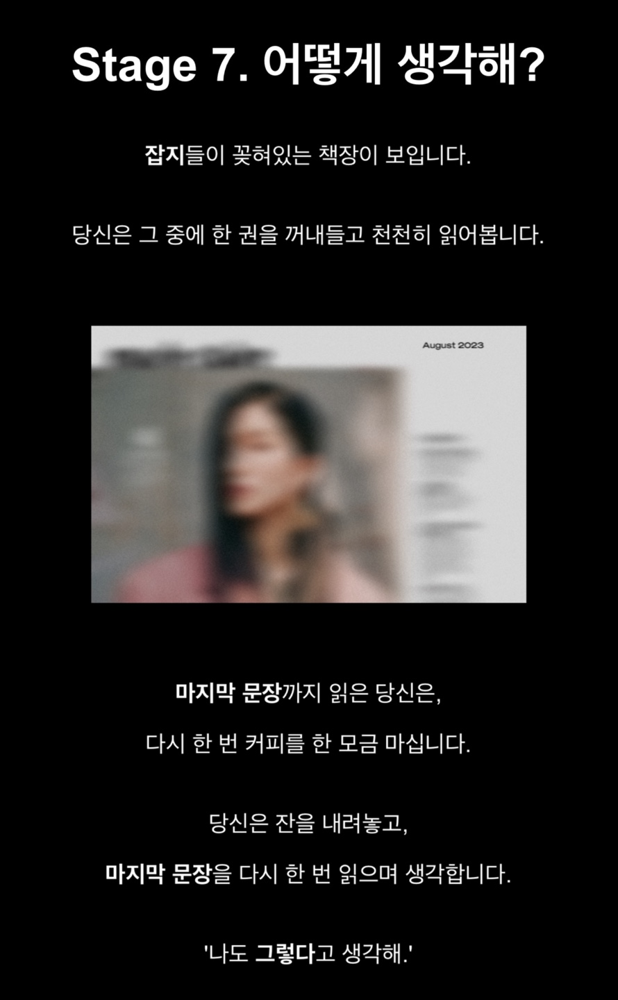
볼드체로 강조된 내용을 통해 확인해야 할 컨텐츠가 “잡지” 인터뷰이며, 사진을 통해 23년 8월호라는 것을 추측할 수 있습니다.
마리끌레르 23년 8월호 나상현씨밴드 인터뷰 내용 중, 볼드체로 강조한 마지막 문자으로 이동해 “그렇다”에 해당하는 부분을 확인한다면 정답이 “잘했다”라는 것을 유추할 수 있습니다.
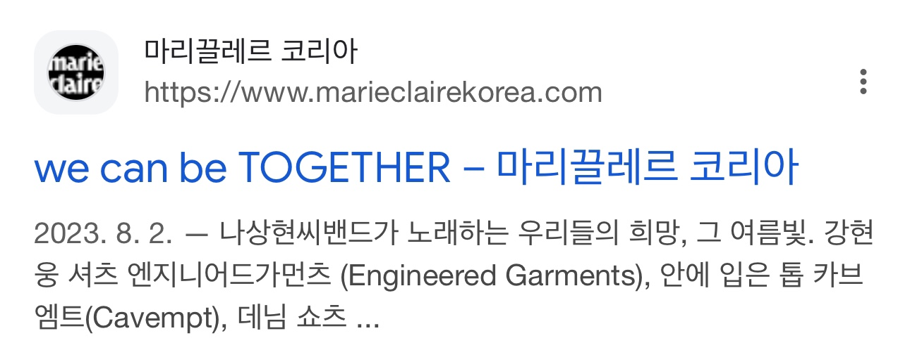
따라서 “잘했다”를 영타로 입력하면 Stage 8로 이동할 수 있습니다.
=> 정답: wkfgoTek
9. Stage 8. 아카이브
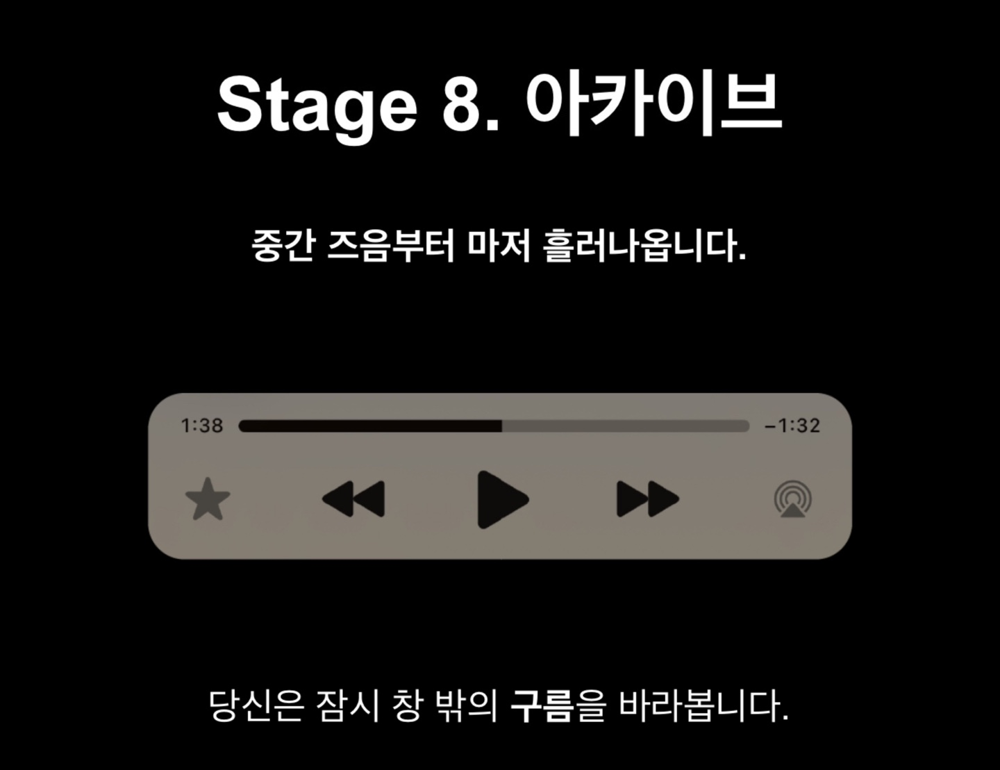
볼드체로 강조된 단어를 통해 확인해야 할 플랫폼이 사운드클라우드라는 사실을 추측할 수 있습니다.
재생바를 통해 곡은 3분 10초라는 것을 알 수 있으며, 상현님의 사운드클라우드 계정을 확인했을 때, 3분 10초에 해당하는 곡은 나상현two에 업로드 된 <너만의 냄새>라는 것을 알 수 있습니다.
첨부된 사진처럼 곡의 1분 28초로 이동하면 “향수”라는 단어를 들을 수 있습니다.
“향수”를 영단어로 번역하여 입력하면 Stage 9로 이동할 수 있습니다.
=> 정답: perfume
10. Stage 9. 언제라도 반가운 마지막 문장에서 볼드체로 강조한 “바란 것”이 “위로”라는 것을 알 수 있습니다.
=> 정답: dnlfh
11. Stage 10. 주인공 인스타그램 아이디와 트위터(X) 아이디를 순서대로 입력하면 엔딩 스테이지로 이동할 수 있습니다.
=> 정답: sanghyunnahnasang23
12. Ending "매일 놀자"를 띄어쓰기 없이 영타로 입력하면 히든스테이지로 이동할 수 있습니다.
=> 정답: aodlfshfwk
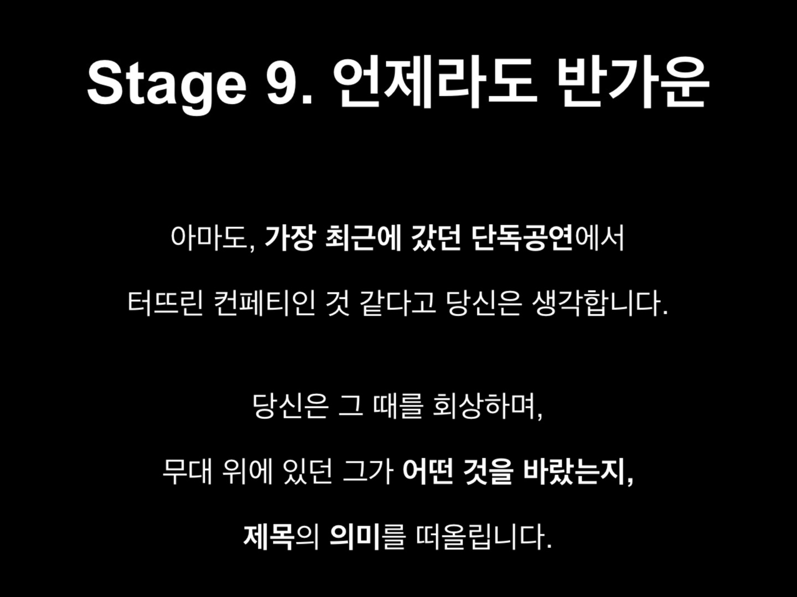
본문에서 말하는 “가장 최근에 갔던 단독공연”은 CLOVER 입니다. 공연과 제목이 같은
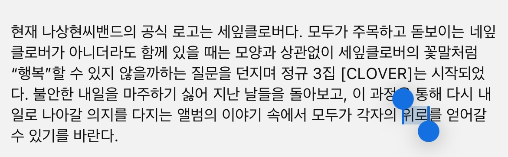
유추해낸 “위로”를 영타로 입력하면 Stage 10으로 이동할 수 있습니다.
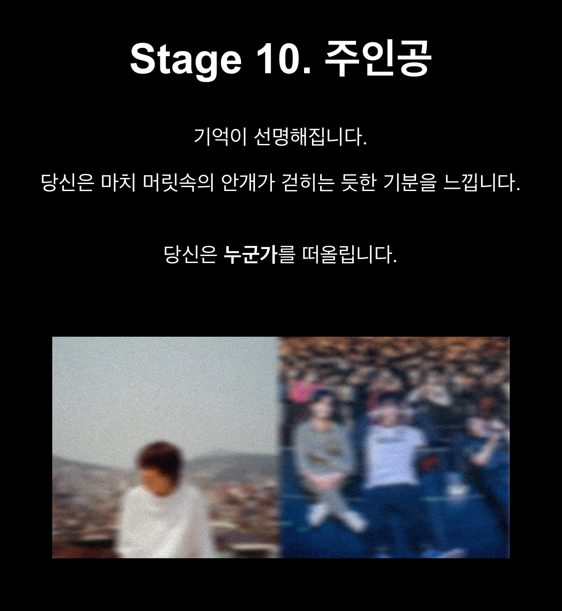
본문의 블러처리 된 사진은 왼쪽부터 상현님의 인스타그램 프로필 사진, 트위터(X) 프로필 사진 입니다.
이를 통해 정답이 상현님의 인스타그램 아이디와 트위터(X) 아이디라는 것을 유추할 수 있습니다.
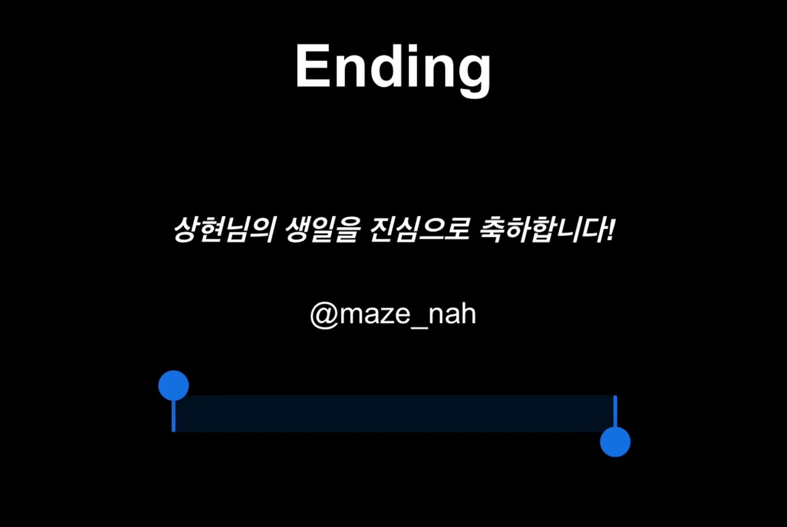
엔딩으로 이동하여 본문의 텍스트를 긁어보면 숨겨진 텍스트가 있다는 사실을 알 수 있습니다.
텍스트를 복사해 메모장 등 다른 페이지에 붙여넣어보면 <세상에 '사랑해'라는 말이 사라진다면?> 이라는 문구가 나타납니다.